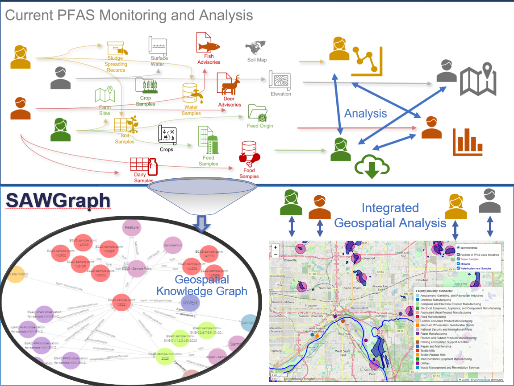

Safe Agricultural Products and Water Graph (SAWGraph)
An Open Knowledge Network to Monitor and Trace PFAS and Other Contaminants in the Nation’s Food and Water Systems
SAWGraph integrates U.S. federal, state, and other datasets about per- and polyfluoroalkyl substances (PFAS) in food, water, and the environment. It brings PFAS observations together with information about facilities and industries, hydrology, geography, agriculture, and chemical substances so that related data can be explored and analyzed together.
PFAS-related information is often maintained in separate datasets, agencies, systems, and formats. Monitoring results, potential sources, water systems, facilities, agricultural information, chemical information, and geographic context may be documented separately and at different scales.
This can make it difficult and time-consuming to determine where monitoring has occurred, what the results show, where important gaps remain, what may be affected, and what sources or pathways warrant further investigation.
SAWGraph addresses this problem by integrating data and context within an interconnected geospatial knowledge network. It links observations with environmental, hydrologic, agricultural, chemical, and spatial information so that users can investigate relationships across datasets without first having to assemble and align those datasets themselves.
In contrast to a fragmented ecosystem of separate data sources, SAWGraph integrates and aligns related data within a geospatial knowledge network that supports dynamic analysis across datasets.

Core Use Cases
SAWGraph was developed around three primary use cases identified through collaboration with government stakeholders and other domain experts.
Understanding Monitoring Results and Coverage
Where has PFAS monitoring occurred, what do the results show, and where are important gaps?
SAWGraph connects monitoring observations with spatial and environmental context to help users examine sampling patterns, compare results, identify less-tested locations or features, and determine where additional monitoring may be useful.
Assessing and Mapping Potential Impacts
What water systems, resources, places, or other features may be affected by reported PFAS contamination?
SAWGraph connects contamination observations with surface water, groundwater, wells, drinking water systems, agricultural areas, and geographic regions to support investigation of potential impacts and help inform monitoring, communication, and mitigation efforts.
Tracing Potential Contamination Sources
What facilities, activities, or environmental pathways may be connected to observed PFAS contamination?
SAWGraph combines contamination observations with information about facilities, industries, spatial relationships, and hydrologic networks to help users identify candidate sources and plausible pathways for further investigation.
What SAWGraph Brings Together
SAWGraph integrates information across several related areas:
PFAS monitoring and releases:
samples, observations, measurement results, and reported releases
Facilities and industries:
industrial, commercial, institutional, and other facilities together with industry classifications
Hydrology and water systems:
streams, rivers, lakes, ponds, wells, aquifers, and drinking water systems
Spatial context:
states, counties, towns and townships, and other spatial reference information
Agricultural context:
cropland use, crop information, and soil properties relevant to contaminant transport and retention
Chemical information:
PFAS identities, classifications, and related chemical properties
What SAWGraph Helps Users Do
By bringing these data and relationships together, SAWGraph can help users:
explore PFAS monitoring results and patterns across locations and sample types
see where monitoring has and has not occurred
identify places or features where additional testing may be useful
investigate possible relationships between contamination observations and potential sources
trace spatial, surface-water, and groundwater connections
assess potential impacts on water systems, agricultural resources, and other places or features
develop research questions and investigate cross-domain patterns
communicate PFAS information through maps, summaries, and other visual outputs
support decisions about monitoring, investigation, communication, and mitigation
Explore SAWGraph
SAWGraph provides multiple ways to explore the integrated data without requiring users to write SPARQL queries.
Prebuilt analyses and annotated demos illustrate questions related to monitoring coverage, potential impacts, and contamination tracing. The SAWGraph Explorer provides a more flexible interface for creating or modifying analysis workflows and viewing the results on interactive maps.
SAWGraph is designed for people and organizations working on PFAS and other contaminants in food, water, and the environment.
Primary users include staff and experts at federal and state agencies responsible for environmental protection, agriculture, food safety, drinking water, public health, and geological science, including EPA, USDA, FDA, USGS, and related state agencies.
SAWGraph is also relevant to agency associations, universities, research organizations, technical partners, project managers, and other researchers and decision-makers who need to examine PFAS information together with environmental and geographic context.
How SAWGraph Works
SAWGraph uses a modular network of interconnected knowledge graphs and ontologies to integrate data from different sources while preserving their meaning and provenance.
The ontologies provide consistent concepts and relationships across datasets. Spatial and hydrologic relationships—including proximity, containment, and upstream and downstream connections—allow information from different domains to be linked and queried together.
User-facing tools build on this integrated structure to support maps, prebuilt analyses, and configurable workflows without requiring users to understand the underlying semantic technologies.